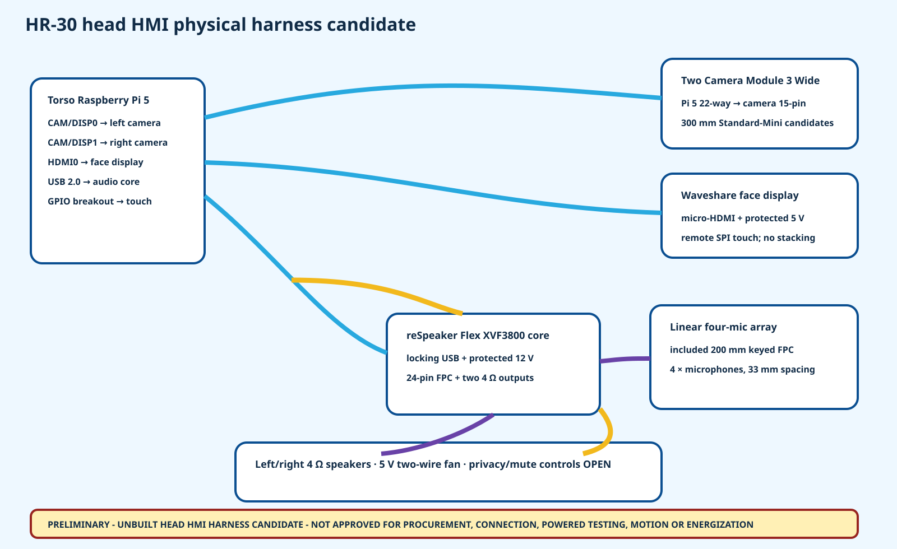

8
located head equipment items
HR-30 whole-body P0.1
Two corrected camera links, an independently routed face display, current audio hardware and explicit privacy/cooling boundaries replace the former generic head connector notes.
located head equipment items
physical HMI links
22-to-15 camera links
built or powered links

Waveshare 4inch HDMI LCD (H), SKU 16340, rotated landscape candidate
98.006 x 14.606 x 58.006Raspberry Pi Camera Module 3 Wide candidate
25.004 x 12.404 x 24.004Raspberry Pi Camera Module 3 Wide candidate
25.004 x 12.404 x 24.004Seeed Studio reSpeaker Flex XVF3800 Linear-4, SKU 100099135, microphone daughterboard candidate
110.004 x 10.004 x 18.004Seeed Studio Mono Enclosed Speaker 4R 5W, SKU 114993346 candidate
12.006 x 40.006 x 40.006Seeed Studio Mono Enclosed Speaker 4R 5W, SKU 114993346 candidate
12.006 x 40.006 x 40.006Seeed Studio reSpeaker Flex XVF3800 core board included with SKU 100099135 candidate
65.004 x 12.004 x 45.004Sunon MF30100V3-10000-A99 30 x 30 x 10 mm 5 V fan candidate
30.004 x 10.004 x 30.004| ID | Service | From | To | Candidate assembly | mm |
|---|---|---|---|---|---|
| HH-L01 | left vision | EQ-T01-PI5 CAM/DISP0 22-way | EQ-H01-CAMERA-L 15-pin | Raspberry Pi Standard-Mini Camera Cable 300 mm candidate | 300 |
| HH-L02 | right vision | EQ-T01-PI5 CAM/DISP1 22-way | EQ-H01-CAMERA-R 15-pin | Raspberry Pi Standard-Mini Camera Cable 300 mm candidate | 300 |
| HH-L03 | face video | EQ-T01-PI5 HDMI0 micro-HDMI | EQ-H01-DISPLAY full-size HDMI | shielded flexible micro-HDMI-to-HDMI cable, 300 mm candidate | 300 |
| HH-L04 | face power | HN01 protected 5 V head branch | EQ-H01-DISPLAY 5 V/GND | keyed two-conductor flexible harness | 260 |
| HH-L05 | touch SPI | EQ-T01-PI5 protected GPIO/SPI breakout | EQ-H01-DISPLAY pins 19/21/22/23/26 plus reference | keyed shielded low-voltage harness | 300 |
| HH-L06 | audio USB | EQ-T01-PI5 USB 2.0 | EQ-H01-AUDIO-AMP locking PH2.0 USB | locking PH2.0 USB UAC/DFU harness candidate | 300 |
| HH-L07 | audio power | HN01 protected 12 V auxiliary branch | EQ-H01-AUDIO-AMP external power terminal | keyed two-conductor flexible harness | 240 |
| HH-L08 | microphone array | EQ-H01-AUDIO-AMP 24-pin FPC | EQ-H01-MIC-ARRAY 24-pin FPC | included keyed 24-pin 0.5 mm-pitch 200 mm FPC | 200 |
| HH-L09 | left speech | EQ-H01-AUDIO-AMP speaker output L | EQ-H01-SPEAKER-L 4 ohm | two-conductor speaker lead | 180 |
| HH-L10 | right speech | EQ-H01-AUDIO-AMP speaker output R | EQ-H01-SPEAKER-R 4 ohm | two-conductor speaker lead | 180 |
| HH-L11 | head cooling | HN01 protected 5 V head branch | EQ-H01-FAN red/black leads | two-conductor fan harness | 180 |
Equipment · Links · Routes · Privacy/control · Tests · Holds